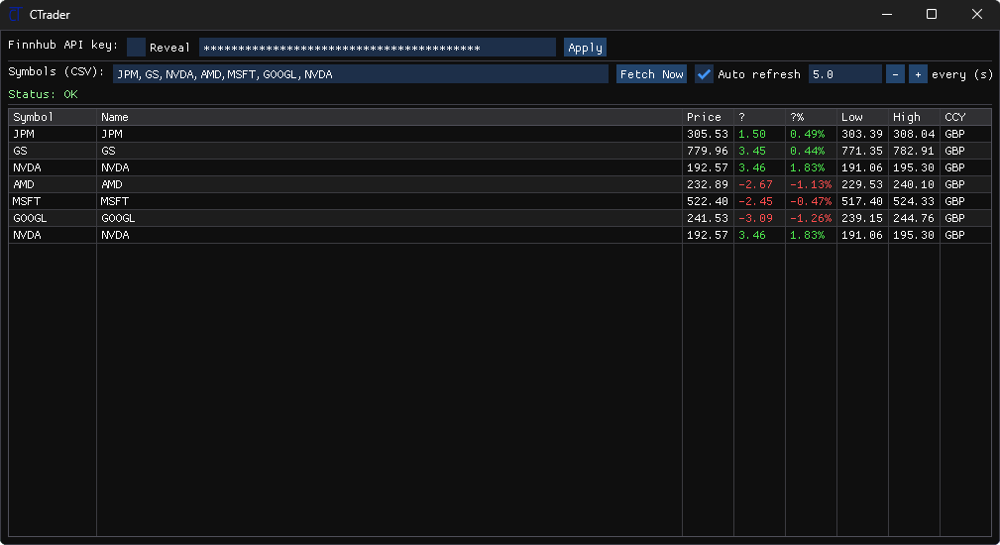

I’m Alan, a Computer Science student at Lancaster University and
Head of Quantitative Development at the LU Ghosal Investment Fund.
My work spans trading infrastructure, systems programming, machine
learning, and product engineering.
Experience building software used by research teams, developing
quantitative systems, and working with industrial robotics.
Feb 2026 — now
LU Ghosal Investment Fund
Head of Quantitative Development
Leading nine quantitative developers building modular research
and trading infrastructure across data, strategy, risk,
portfolio accounting, and execution.
Architected a signal-to-execution pipeline with simulated
and live broker interfaces.
Infrastructure supports 19 researchers and developers.
Oct 2025 — Feb 2026
LU Ghosal Investment Fund
Quantitative Developer
Built the core of an event-driven backtesting and trading
system, including asynchronous signal pipelines, portfolio
accounting, risk controls, and performance metrics.
Jun — Jul 2023
Agile Robots SE
Engineering Intern
Developed a Python control program for a Yu 5 industrial robot
in a three-person team, implementing interpolation-based
algorithms for precise 3D motion.
Portfolio
Selected projects.
Selected work across quantitative infrastructure, low-level systems,
machine learning, and product development.
Quantitative infrastructure
Data→Signals→Portfolio→Execution
LU Ghosal Investment Fund2025 — now
GhosalQuant
A modular, event-driven Python library for quantitative trading
research, supporting strategy execution, backtesting, portfolio
accounting, risk controls, and performance analytics.
Python
Event-driven architecture
Portfolio analytics
Core infrastructure used by 19 researchers and developers.
Developed as part of the Lancaster University Ghosal Investment
Fund.
Market data

Desktop application2025 — now
CTrader
A real-time market data tool with an interactive ImGui
interface, live Finnhub data, HTTP networking, and JSON parsing
in C++.
A 32-bit protected-mode operating system built from scratch:
bootloader, kernel, memory and interrupts, ATA PIO, FAT12, CLI,
and an early window manager.
A neural network implemented and trained from first principles
using NumPy, accompanied by a mathematical investigation of the
forward pass, backpropagation, and optimisation.
I study Computer Science with an Economics minor at Lancaster
University, with predicted First Class Honours. My interests sit at
the intersection of software systems, quantitative research, and
applied mathematics.
Education
2025 — 2028
Lancaster University
BSc (Hons) Computer Science Economics minor · Predicted
First
Graduated 2025
Bavarian International School
International Baccalaureate · 43/45 Top 5% globally
 GitHub
GitHub LinkedIn
LinkedIn